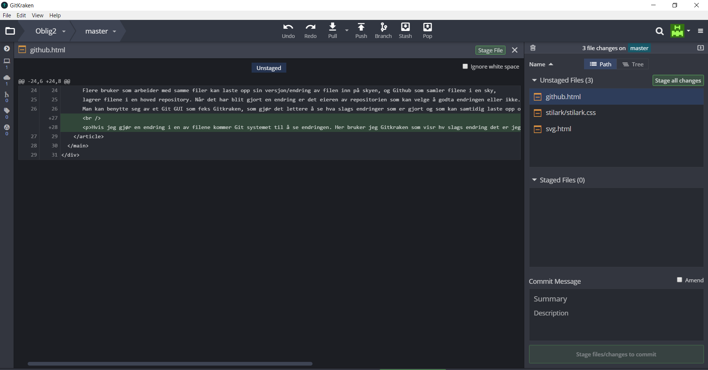

Hva er Git og Github?
Git er et versjonskontrollsystem som tracker filer på datamaskinen og koordinerer arbeid sammen med flere brukere på disse filene. Flere bruker som arbeider med samme filer kan laste opp sin versjon/endring av filen inn på skyen, og Github som samler filene i en sky, lagrer filene i en hoved repository. Når det har blit gjort en endring er det eieren av repositorien som kan velge å godta endringen eller ikke. Man kan benytte seg av et Git GUI som feks Gitkraken, som gjør det lettere å se hva slags endringer som er gjort og som kan samtidig laste opp og laste ned filene fra og til Github.
Hvis jeg gjør en endring i en av filene kommer Git systemet til å se endringen.
Her bruker jeg Gitkraken som visr hv slags endring det er jeg har gjort:
Jeg har lagt till en text her som vises i grønn. jeg velger å akseptere endringen.